Unidad 1
Contenidos de la unidad
Seis apartados. Los tres primeros son de conocer; los tres últimos, de calcular y practicar.
- 1.1El sistema informático
- 1.2Evolución histórica de la informática
- 1.3Componentes hardware
- 1.4Software de un sistema informático
- 1.5Representación de la información
- 1.6Codificación de la información
Resultado de aprendizaje 1
Qué vas a saber hacer al terminar
Manejar los conceptos básicos de la informática
Qué es un sistema informático, de qué se compone y de dónde viene.
Operar con electrónica digital básica
Puertas lógicas y tablas de verdad: NOT, AND, OR, XOR y cómo el ordenador suma con ellas.
Distinguir tipos de software y su legislación
Propietario, libre, abierto; licencias, propiedad intelectual y protección de datos.
Identificar los elementos funcionales de un ordenador
Procesador, memoria, buses, entrada/salida y periféricos, y cómo se relacionan.
Codificar la información en distintos sistemas
Binario, octal, hexadecimal; sumas, restas y complementos; ASCII, Unicode, unidades y formatos.
Describir el ciclo de instrucción
Qué hace el procesador con cada instrucción: buscarla, decodificarla y ejecutarla.
1.1 · Concepto clave
Sistema informático
Conjunto de componentes físicos (hardware) y lógicos (software) cuya función es procesar y automatizar la información. El elemento central es el ordenador.
También forma parte del sistema el personal que lo hace funcionar y lo mantiene. Y los datos (documentos, fotos, contraseñas) son software: no se pueden tocar.
1.1 · El sistema informático
Hardware frente a software
Hardware
Lo físico: electrónico y mecánico. Se puede tocar.
- ●La carcasa y los circuitos internos
- ●El microprocesador y la memoria
- ●Dispositivos de entrada y salida: pantalla, teclado, ratón, impresora
- ●Elementos de comunicación: tarjeta de red, módem, wifi
Software
Lo lógico: programas y datos. No se puede tocar.
- ●El sistema operativo
- ●Los programas de aplicación
- ●Los datos almacenados: documentos, vídeos, fotografías
- ●Una contraseña, un certificado digital
1.1 · El sistema informático
Tipos de sistemas informáticos
Ordenados de mayor a menor precio, tamaño, potencia y velocidad. El primer superordenador que superó 1 teraflops (ASCI Red, 1997) rendía menos que la GPU de un smartphone actual.
El superordenador de España
725.000
núcleos de procesador
MareNostrum 5, en el Barcelona Supercomputing Center. Instalado en una antigua capilla del campus de la UPC. Se usa para simular el clima, diseñar fármacos y entrenar modelos de inteligencia artificial.
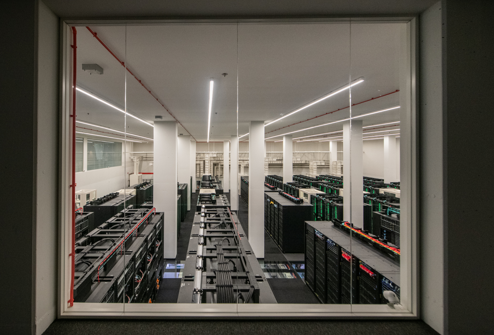
Figura 1.1. MareNostrum 5 en la capilla de Torre Girona. Haz clic en la foto para verla en grande. Tu ordenador tiene entre 4 y 16 núcleos.
Pregunta a la clase
¿Existen más tipos de sistemas informáticos?
La tabla anterior se queda corta. ¿Qué aparatos de vuestra casa llevan un ordenador dentro?
Pregunta a la clase
¿Qué es la información?
La palabra informática viene de información automática: procesar información sin intervención humana. Pero ¿un número suelto es información?
La pirámide DIKW, con la medicina como ejemplo
Lo hacen las personas. ConocimientoFiebre alta con dolor de garganta suele ser una infección, y se trata así.
Personas y sistemas de inteligencia artificial. InformaciónEste paciente tiene 39 °C y 110 pulsaciones: fiebre y taquicardia.
Sistemas de información. Datos39, 110, 1015. Cifras sueltas, sin contexto.
Los ordenadores, desde el principio.
Información. 2. f. Conjunto de datos que se dan a conocer o son objeto de información. Real Academia Española, Diccionario del estudiante.
¿Cuál de estos elementos NO es hardware?
Selecciona una opción.
1.2 · Evolución histórica
Antes del ordenador: máquinas de calcular
La informática avanza a la par que la mecánica y la electrónica. Durante siglos, calcular fue una tarea manual, y estas máquinas la aceleraron.
El ábaco · Antigüedad y Edad Media
Un marco con varillas y cuentas. Cada varilla es una posición: unidades, decenas, centenas. En el ábaco chino, las cuentas de arriba valen 5 y las de abajo, 1. Sirve para sumar y restar.
La Pascalina · Blaise Pascal, 1642
Calculadora mecánica de ruedas dentadas. Suma y resta directamente; multiplica a base de sumas repetidas.
La calculadora de Leibniz · 1673
Más potente: añade la multiplicación y la división. Su mecanismo de cilindro escalonado se siguió usando en calculadoras hasta el siglo XX.
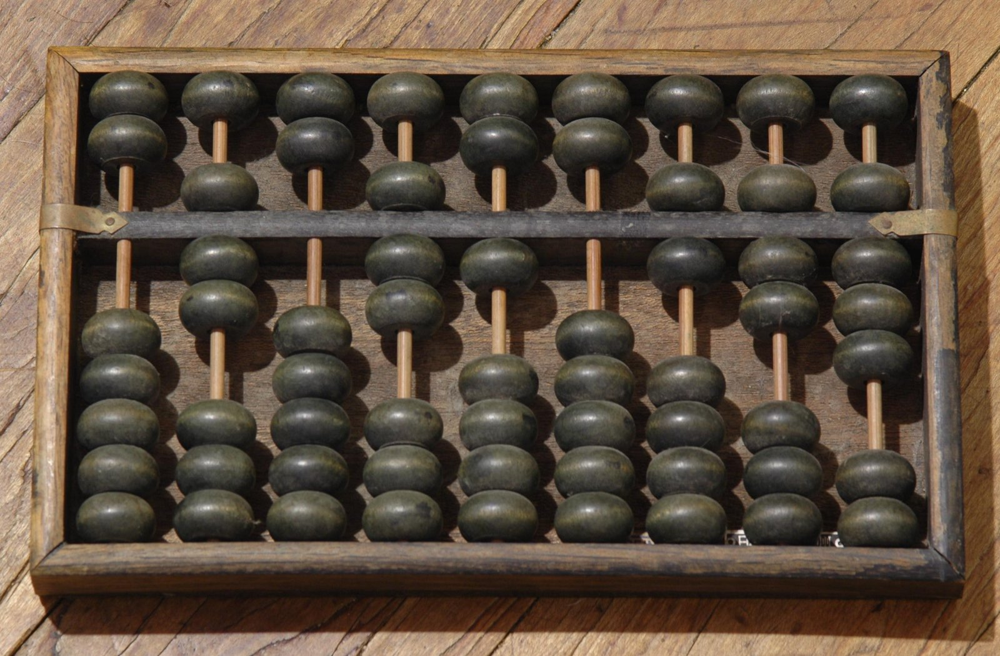
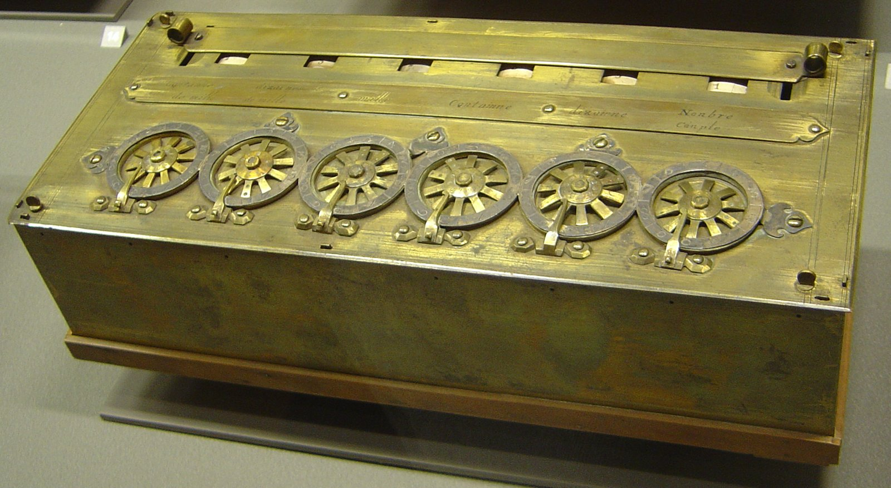
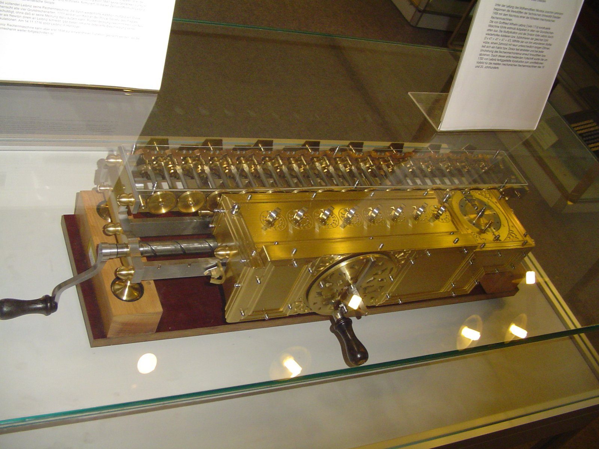
1.2 · Evolución histórica
Las tarjetas perforadas
Una cartulina con agujeros puede guardar instrucciones o datos. Es la primera forma de separar la máquina de lo que hace.
Telar de Jacquard · 1804
Una cadena de tarjetas perforadas le dice al telar qué hilos levantar en cada pasada. El dibujo de la tela está en las tarjetas: cambiar de dibujo es cambiar de tarjetas. Es un telar programable.
Máquina Analítica · Charles Babbage, 1837
Diseño de una máquina de cálculo de propósito general con memoria para guardar números, una unidad que calcula y entrada y salida por tarjetas. Nunca llegó a funcionar del todo.
Máquina tabuladora · Herman Hollerith, 1890
Lee tarjetas perforadas con contactos eléctricos para el censo de Estados Unidos. La empresa que fundó Hollerith en 1896 pasó a llamarse IBM en 1924.
Las tarjetas perforadas se usaron para introducir datos y programas en los ordenadores hasta finales de los años setenta: una tarjeta, una línea de programa.
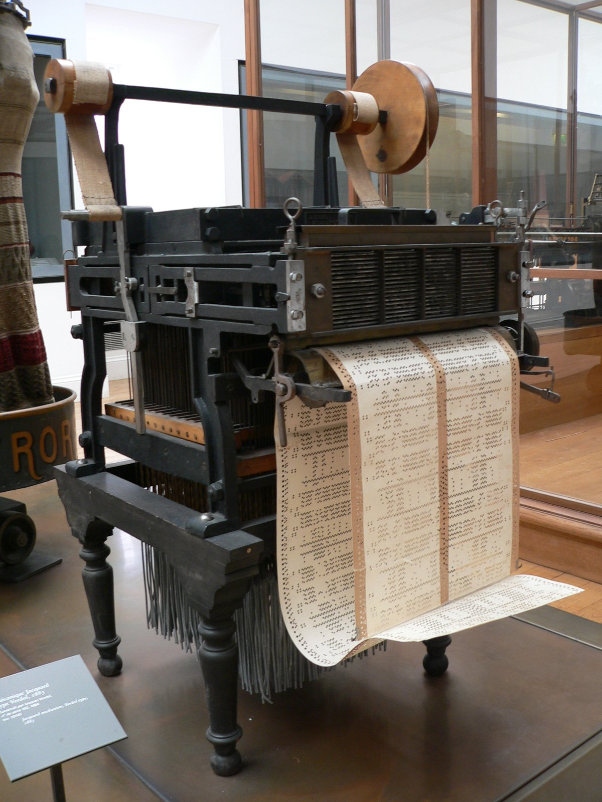
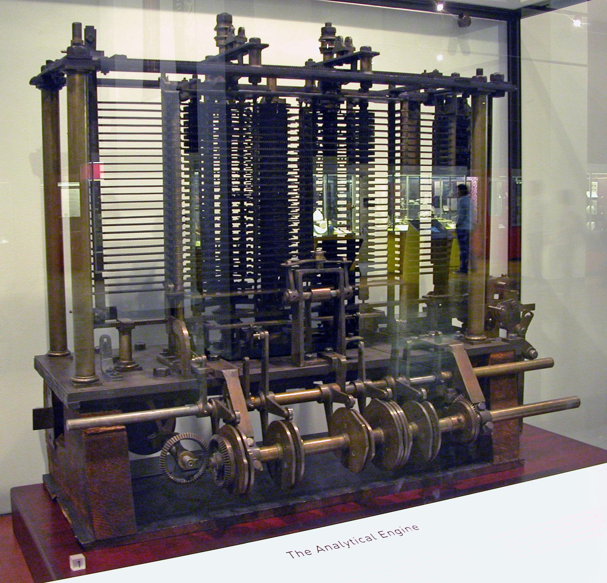
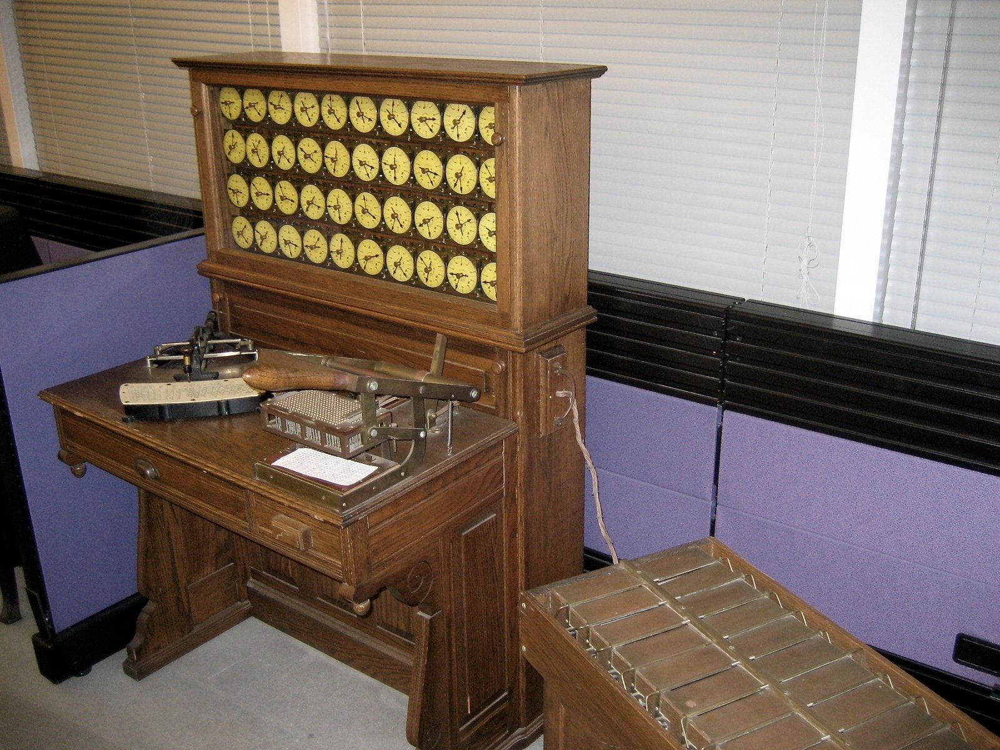
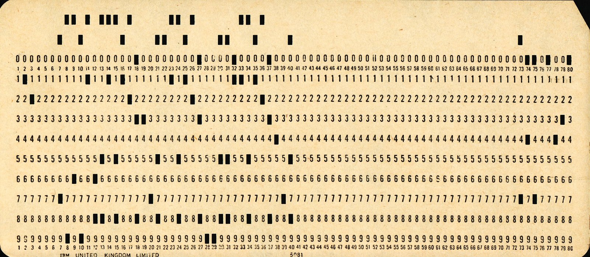

Curiosidad: por qué el teclado es QWERTY
El teclado desciende de la máquina de escribir de Christopher Sholes, patentada en 1868 y fabricada por Remington desde 1873. Su distribución se llama QWERTY por las seis primeras letras de la fila superior. Según la explicación tradicional, separa las letras que se pulsan seguidas para que las varillas no se atascaran, porque las máquinas eran lentas.
Ha llegado hasta hoy aunque existen distribuciones más eficientes, como la Dvorak (1936). Un detalle: la palabra TYPEWRITER se escribe entera con la fila superior.
Vídeo 1.1. Ada Lovelace for Kids, Bedtime History (YouTube). Duración: 6 min. En inglés: activa los subtítulos en español.
1.2 · Vídeo
Ada Lovelace, la primera programadora
Trabajó con Babbage sobre la Máquina Analítica sin que la máquina existiera. Tres ideas que debes sacar del vídeo:
- 1Las notas (1843). Tradujo un artículo sobre la Máquina Analítica y le añadió unas notas más largas que el propio artículo.
- 2El primer programa. En la nota G describe paso a paso cómo la máquina calcularía los números de Bernoulli: se considera el primer algoritmo publicado para una máquina.
- 3Más allá del cálculo. Entendió que la máquina podía manejar símbolos, no solo números, y que podría llegar a componer música. El lenguaje Ada (1980) lleva su nombre.
1.2 · Evolución histórica
Cuándo hay ordenador: el programa interno
Con la electrónica, las máquinas mecánicas se sustituyen por máquinas electrónicas. Pero el ordenador aparece cuando surge el programa interno: la máquina guarda un programa, recibe unos datos de entrada, los procesa y produce unos datos de salida.
Cambiar de tarea ya no es cambiar de máquina ni recablearla: es cargar otro programa. Esta idea, con el programa guardado en la misma memoria que los datos, la formalizó John von Neumann en 1945 y sigue siendo la base de tu ordenador y de tu móvil.
Datos de entrada
Teclado, tarjetas, sensores, red
Proceso
El programa, dentro de la máquina, dice qué hacer con los datos
Datos de salida
Pantalla, impresora, altavoces, red
Figura 1.9. Esquema básico de funcionamiento de un ordenador. Elaboración propia.
1.2.1 · Generaciones de ordenadores
Las cinco generaciones
Tabla 1.2. Generaciones según el grado de integración de los componentes. Los años de cada generación son orientativos: cada fuente los mueve un poco. Las fechas de los hitos son las de presentación de cada máquina.
1.2.1 · Generaciones de ordenadores
1.ª y 2.ª generación
1.ª generación (1940-1959) · válvulas de vacío
- ●Uso exclusivo científico y militar. Ocupaban una habitación y calculaban menos que una calculadora de bolsillo.
- ●Mark I (Aiken con IBM, 1944), basado en las ideas de Babbage. Se programaba con interruptores: más calculadora que ordenador.
- ●ENIAC (1946): el primer ordenador electrónico de uso práctico. Sus válvulas se fundían continuamente.
- ●UNIVAC I (1951): empiezan los ordenadores comerciales. Aparecen el sistema operativo y los primeros lenguajes: ensamblador, Fortran, LISP.
2.ª generación (1960-1965) · el transistor
- ●El transistor (Laboratorios Bell, 1947) sustituye a la válvula: ordenadores más pequeños, fiables y económicos.
- ●Aparece el concepto de periférico. Nuevos lenguajes: Algol y COBOL. El programa se escribe y la máquina lo traduce a lenguaje máquina.
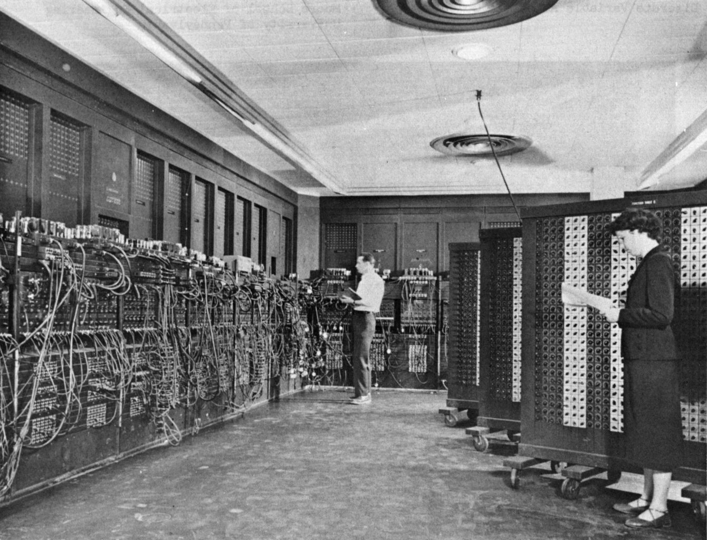
Figura 1.10. Programar el ENIAC era cablear paneles: 17.468 válvulas y unas 27 toneladas.
1.2.1 · Generaciones de ordenadores
3.ª y 4.ª generación
3.ª generación (1966-1971) · el circuito integrado
- ●El chip: muchos transistores miniaturizados en una pastilla de silicio. Menos tamaño, coste y consumo, y más capacidad: los ordenadores se venden a empresas.
- ●Escalas de integración según los transistores por chip: SSI, MSI, LSI, VLSI y ULSI (de small a ultra large scale integration).
- ●Lenguajes: BASIC, Pascal, C.
4.ª generación (1971-1981) · el microprocesador
- ●Toda la unidad central de proceso en un solo chip (LSI y VLSI). El primero, el Intel 4004 (1971), con 2.300 transistores.
- ●Baja tanto el coste que nace el ordenador personal o doméstico: por primera vez un particular puede comprar uno.
- ●Sistemas operativos CP/M y Unix; programas de gestión; PROLOG para inteligencia artificial. Micros Intel, Zilog (ZX Spectrum, Amstrad) y Motorola (Commodore, Atari, Apple).
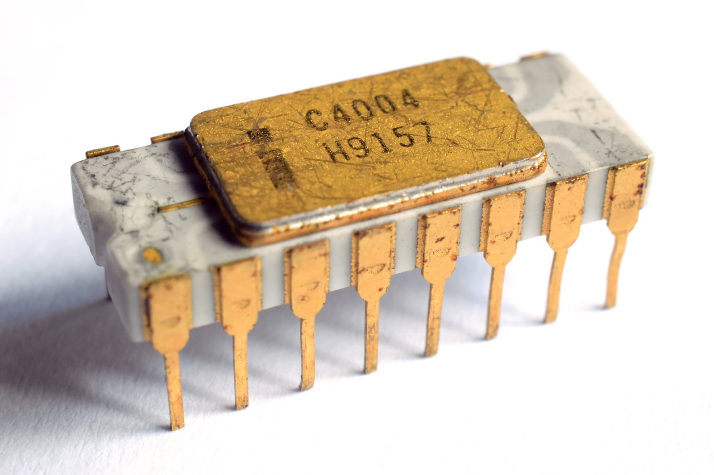
Figura 1.11. Intel 4004 (1971): 2.300 transistores, 4 bits.
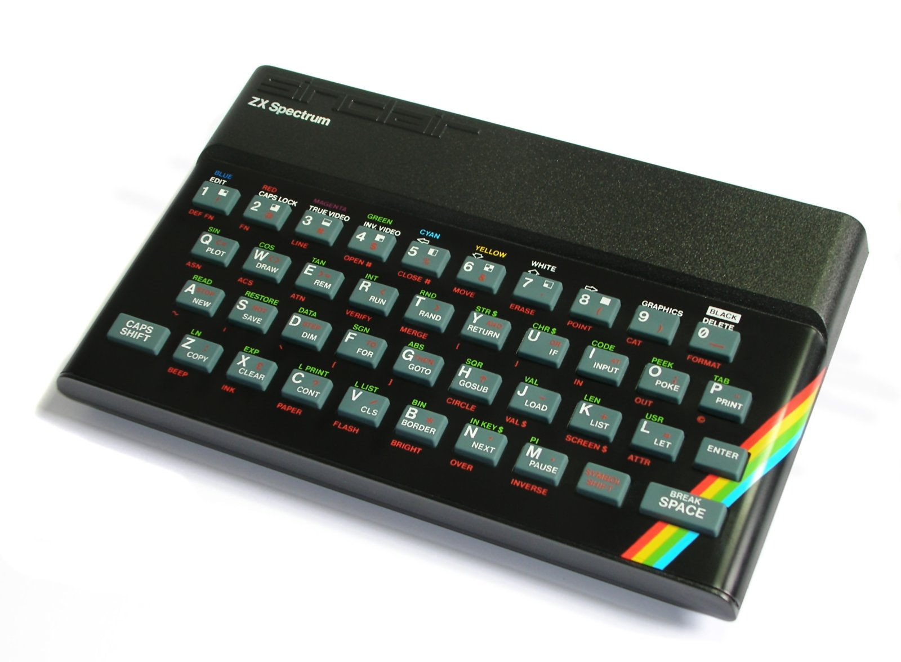
Figura 1.12. ZX Spectrum (1982): el ordenador doméstico más popular en España en los años ochenta.
1.2.1 · Generaciones de ordenadores
5.ª generación: el PC
- ●1981: IBM presenta el PC, con el sistema operativo MS-DOS de Microsoft, en modo texto. Más adelante llega Windows, con interfaz gráfica.
- ●Su éxito crea un estándar: otras marcas venden ordenadores compatibles, y aparece el clónico, montado con piezas sueltas y sin marca.
- ●Apple sigue otro camino con el Macintosh (1984) y su sistema Mac OS: no es compatible con el PC y destaca por su interfaz gráfica.
- ●A principios de los noventa nace Linux (1991), una versión de Unix para el PC.
- ●Se impone la programación orientada a objetos: C++, Java, C#, y entornos de desarrollo gráficos.
¿Existe de verdad una 5.ª generación? Desde 1981 no ha habido una ruptura en el diseño como las anteriores: solo más integración, velocidad y memoria. Por eso algunos autores la niegan. Otros fijan su inicio en el momento en que el ordenador sale del ámbito militar, universitario y empresarial y entra en las casas.
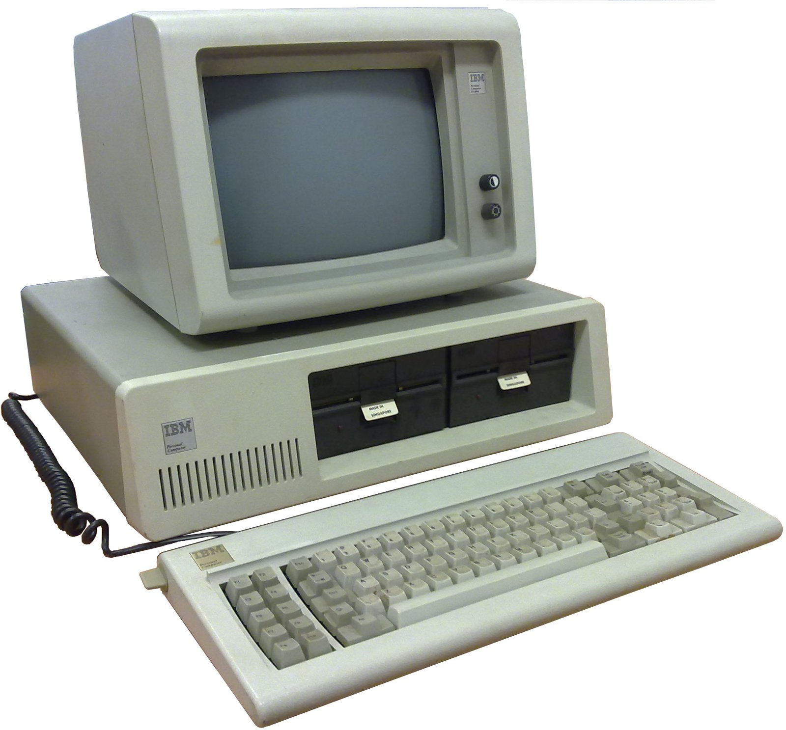
Figura 1.13. IBM PC 5150: procesador Intel 8088 a 4,77 MHz y dos disqueteras de 5¼ pulgadas.
Vídeo 1.2. ¿La Ley de Huang es la nueva Ley de Moore?, Data Coffee #14, Dot CSV (YouTube, 2020). Duración: 20 min.
1.2 · Vídeo
De la Ley de Moore a la Ley de Huang
Durante cincuenta años los chips han doblado su capacidad cada dos años. El vídeo cuenta por qué eso se está acabando y qué viene después.
- —Duración: 20 minutos. El vídeo es de 2020: fíjate en qué ha cambiado desde entonces.
- —Anota: qué dice exactamente la Ley de Moore, por qué se frena y qué propone Nvidia.
1.2 · Evolución histórica
De la Ley de Moore a la Ley de Huang
Ley de Moore (1965, revisada en 1975)
Gordon Moore, cofundador de Intel, observó que el número de transistores de un chip se duplica cada dos años. No es una ley física: es una tendencia que la industria ha cumplido durante cincuenta años (gráfica).
Por qué se frena
Los transistores actuales se fabrican en procesos de 2 nanómetros (TSMC, 2025), cerca de los límites físicos del silicio. Y la frecuencia lleva estancada en 3-5 GHz desde 2005: subir más genera demasiado calor.
Ley de Huang (2020)
Jensen Huang, director de Nvidia: el rendimiento de las GPU se duplica con creces cada dos años gracias al paralelismo (miles de núcleos sencillos trabajando a la vez) y a hardware especializado, no a más frecuencia. Es la base de la inteligencia artificial actual.
Transistores por chip, 1971-2024 · escala logarítmica
Figura 1.14. Elaboración propia con datos de Ley de Moore y Transistor count (Wikipedia, consultados en septiembre de 2026). Pasa el ratón por cada punto para ver el chip.
Pregunta a la clase
¿Sigue cumpliéndose la Ley de Huang en 2026?
El vídeo es de 2020. Desde entonces han llegado ChatGPT, las NPU en los portátiles y los móviles, y centros de datos con cientos de miles de GPU. ¿De dónde sale hoy el rendimiento?
Ideas para el debate
- ●Entrenar no es lo mismo que usar. Entrenar un modelo de IA necesita miles de GPU durante semanas; usarlo (inferencia) se hace en un chip pequeño. Cada tarea pide un hardware distinto.
- ●Hardware específico. Los tensor cores de las GPU y las NPU de portátiles y móviles hacen una sola cosa (multiplicar matrices), pero la hacen muchísimo más rápido que un núcleo general.
- ●Generar en vez de calcular. DLSS y el reescalado por IA dibujan parte de los píxeles de un juego con una red neuronal en lugar de calcularlos: más imágenes por segundo sin más potencia bruta.
- ●Muchas GPU juntas. Los grandes saltos ya no vienen de un chip, sino de conectar decenas de miles en un centro de datos.
- ?Para discutir: ¿es más rendimiento de verdad o son trampas inteligentes? ¿Se puede seguir llamando "ley" a algo que solo se cumple para una tarea?
¿En qué generación apareció el PC de IBM?
Selecciona una opción.
Pregunta a la clase
¿Qué ordenador tenéis? ¿Qué características tiene?
La marca y el modelo no bastan. ¿Sabéis qué procesador lleva, cuánta memoria tiene o si el disco es un SSD?
Qué mirar
- ●Procesador: modelo, núcleos e hilos, frecuencia.
- ●Memoria RAM: cuántos GB.
- ●Disco: HDD o SSD, y su capacidad.
- ●Gráfica: integrada en el micro o tarjeta dedicada.
- ●Sistema operativo: versión y si es de 64 bits.
Dónde mirarlo
Windows 11
- Configuración › Sistema › Acerca de
- Administrador de tareas › Rendimiento (Ctrl + Mayús + Esc)
- Win + R y escribir
msinfo32odxdiag
Linux, en un terminal
lscpuprocesador, núcleos e hilosfree -hmemoria RAMlsblkdiscos y particiones
1.3.1 · Elementos físicos
Los elementos físicos de un ordenador
El hardware es el conjunto de componentes electrónicos, mecánicos y electromecánicos: todo lo material, lo que se puede tocar. Desde el punto de vista físico se distinguen tres grupos.
Dentro de la carcasa
- ●La placa base, que conecta todo lo demás
- ●El microprocesador y la memoria RAM
- ●Tarjetas de expansión: gráfica, red, sonido, captura
- ●Conectores para el exterior: USB, HDMI, red, audio
- ●La fuente de alimentación
- ●Las unidades de disco: SSD y disco duro
Periféricos
Dispositivos externos que introducen información en el ordenador o la sacan de él.
- ●De entrada: teclado, ratón, webcam
- ●De salida: monitor, impresora, altavoces
- ●De entrada y salida: pantalla táctil
Se conectan por USB, HDMI o el conector de audio, o sin cable por Bluetooth y wifi.
Memorias auxiliares
Guardan la información de forma permanente, con el ordenador apagado.
- ●Discos externos por USB
- ●Tarjetas SD y microSD
- ●Memorias USB (pendrives)
- ●Y también los discos de dentro de la carcasa
Como meten y sacan información, también pueden considerarse periféricos de entrada y salida.
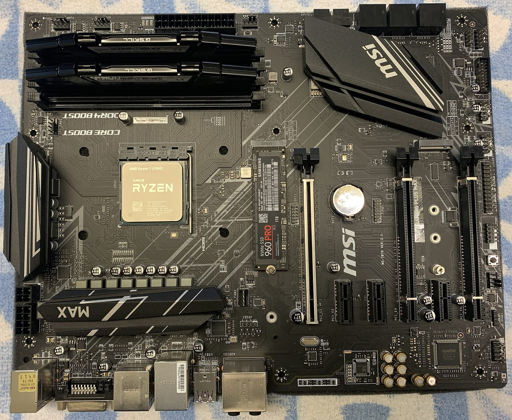
1 2 3 4 5 6 7 8 9 101.3.1 · Elementos físicos
La placa base por dentro
- 1Zócalo del microprocesador (Socket AM4) con el micro puesto; encima irá el disipador.
- 2Ranuras de memoria RAM: cuatro, dos ocupadas con módulos DDR4.
- 3SSD NVMe en ranura M.2: el disco del sistema, del tamaño de un chicle.
- 4Ranuras PCI Express: la larga (x16) para la tarjeta gráfica; las cortas, para otras tarjetas.
- 5Chipset, bajo el disipador con el logotipo: comunica el micro con el resto de la placa.
- 6Conectores SATA para discos duros y SSD de 2,5 y 3,5 pulgadas.
- 7Conector de alimentación ATX de 24 pines, desde la fuente.
- 8Alimentación del micro, de 8 pines.
- 9Panel trasero de conectores: USB, red, HDMI, audio. En la foto queda abajo.
- 10Pila de botón (CR2032): conserva la hora y la configuración con el equipo apagado.
Figura 1.15. Placa base ATX con el micro y el SSD montados. Pasa el ratón por la lista para localizar cada pieza; clic en la foto para ampliarla.
1.3.1 · Elementos físicos
Periféricos: entrada, salida y las dos cosas
Tabla 1.3. Clasificación de los periféricos según el sentido de la información. Las memorias auxiliares también meten y sacan información, así que pueden considerarse periféricos de entrada y salida.
Curiosidad. Los relieves de las teclas F y J, y del 5 del teclado numérico, sirven de referencia para escribir sin mirar al teclado y ayudan a las personas ciegas a situar las manos.
1.3.1 · Elementos físicos
Memorias auxiliares
Guardan programas y datos de forma permanente: no pierden su contenido al apagar el ordenador. Son no volátiles, tienen mucha más capacidad que la memoria principal y son más lentas que ella.
Cuentan tanto las que van fuera de la carcasa (discos USB, tarjetas, pendrives) como las que van dentro (el SSD o el disco duro del sistema).
Puesto al día. El Blu-ray se presentó en 2006 como sucesor del DVD, pero el lector óptico ha desaparecido de los ordenadores nuevos: hoy la información viaja por USB y por la red.
Disco duro (HDD)
Platos magnéticos que giran. Barato por GB, lento y con partes móviles. Unos 150 MB/s.
SSD SATA
Memoria flash, sin partes móviles, con el mismo conector que un disco duro. Unos 550 MB/s.
SSD NVMe (M.2)
Flash conectada directamente al bus PCI Express. De 3.000 a 14.000 MB/s. Es el disco de los portátiles actuales.
Flash extraíble
Pendrives USB y tarjetas SD y microSD: cámaras, móviles, placas como la Raspberry Pi.
Disco óptico
CD (700 MB), DVD (4,7 GB) y Blu-ray (25 GB por capa). Casi han desaparecido de los ordenadores.
Almacenamiento en la nube
OneDrive, Google Drive, Dropbox: una memoria auxiliar remota, en el ordenador de otro. Necesita red.
Velocidades orientativas de lectura secuencial. Lo que importa es el orden de magnitud: un NVMe es decenas de veces más rápido que un disco duro.
1.3.2 · Elementos funcionales
Las partes funcionales de un ordenador
Por su función, no por su forma, un ordenador se compone de:
- ●Unidad central de proceso (CPU), el microprocesador: unidad de control (UC), unidad aritmético-lógica (UAL) y registros.
- ●Memoria principal (MP): RAM y ROM.
- ●Bus del sistema, que lo interconecta todo: bus de datos + bus de direcciones + bus de control.
- ●Unidad de entrada/salida, puente hacia el exterior.
- ●Periféricos y memoria auxiliar, fuera de la placa base.
Figura 1.16. Esquema de las partes funcionales. El fondo amarillo señala lo que está en la placa base. Elaboración propia.
1.3.2 · Elementos funcionales
Los tres buses
Tabla 1.4. Los buses interconectan todos los elementos del ordenador. Un bus es un conjunto de líneas eléctricas compartidas: su ancho (número de bits que lleva a la vez) es una de las cifras que más pesan en el rendimiento.
Por qué "64 bits". Con un bus de direcciones de 32 bits solo hay 232 direcciones distintas: 4 GB. Por eso un sistema operativo de 32 bits no puede aprovechar más de 4 GB de memoria RAM. Con 64 bits el límite deja de ser un problema.
1.3.2 · Elementos funcionales
La unidad de control (UC)
Es la parte del microprocesador que interpreta las instrucciones y envía señales a cada elemento del ordenador, por el bus de control, para decirle cuándo debe actuar.
Para trabajar usa registros: memorias diminutas dentro del propio micro, las más rápidas de todo el ordenador, donde guarda los datos intermedios que necesita.
Así es una instrucción dentro del registro de instrucción
código de operación MD
modo de direccionamiento dato o dirección
sobre lo que se opera
Registro de instrucción (RI)
Contiene la instrucción que se está ejecutando en este momento: su código de operación, el modo de direccionamiento y el dato o la dirección donde está.
Contador de programa (CP)
Guarda la dirección de memoria de la siguiente instrucción que hay que ejecutar.
Decodificador
Interpreta el código de operación del registro de instrucción: averigua qué hay que hacer.
Secuenciador
Sincronizado por el reloj, genera las microórdenes: las órdenes elementales que ejecutan la instrucción paso a paso.
Reloj
Genera los pulsos que sincronizan todo el sistema. Cuantos más pulsos por segundo, más rápido trabaja el ordenador.
1.3.2 · Elementos funcionales
La unidad aritmético-lógica (UAL)
Realiza todas las operaciones aritméticas (sumar, restar, comparar) y lógicas (NOT, AND, OR) que hace el ordenador. Trabaja con estos registros.
Guarda en la cabeza los bits C y O del registro de estado. Volverán en el apartado 1.5, cuando sumemos y restemos en binario, y explican por qué el contador de visitas de Gangnam Style se rompió.
Registros de datos
Contienen los operandos: los datos de entrada sobre los que se va a operar.
Acumulador (AC)
Almacena el resultado de la operación que se acaba de realizar.
Registro de estado (RE)
Guarda las condiciones de la última operación mediante bits llamados indicadores o flags:
Z
el resultado fue cero
S
el resultado fue negativo (signo)
C
hubo acarreo (me llevo una)
O
desbordamiento: el resultado no cabe
Circuito operacional
Los circuitos electrónicos que hacen las operaciones. Están construidos con puertas lógicas: lo veremos en el apartado 1.5.
1.3.2 · Elementos funcionales
El ciclo de instrucción
El microprocesador repite estos cuatro pasos miles de millones de veces por segundo, una instrucción tras otra, desde que el ordenador arranca hasta que se apaga.
Buscar la instrucción
La UC pone la dirección que hay en el CP en el bus de direcciones. La memoria devuelve por el bus de datos la instrucción, que se guarda en el RI.
Decodificar
El decodificador interpreta el código de operación y el modo de direccionamiento: ya sabe qué hay que hacer y dónde están los datos.
Ejecutar
El secuenciador, al ritmo del reloj, genera las microórdenes: la UAL opera, o se lee o escribe en memoria, o se accede a la E/S. El resultado va al acumulador y se actualiza el registro de estado.
Avanzar
El CP pasa a apuntar a la siguiente instrucción (CP + 1) y el ciclo vuelve a empezar. Si la instrucción era un salto, el CP toma la dirección de destino.
Modos de direccionamiento
El campo MD de la instrucción dice qué significa lo que viene después: si es el dato en sí o dónde encontrarlo.
Tabla 1.5. Modos de direccionamiento. Los esquemas son ilustrativos: cada procesador escribe sus instrucciones a su manera.
1.3.2 · Elementos funcionales
El reloj y la frecuencia
Un cristal de cuarzo genera pulsos que marcan el ritmo de todo el sistema. Cada pulso es un ciclo; la frecuencia es el número de ciclos por segundo y se mide en hercios (Hz).
1 Hz
1 ciclo por segundo
1 kHz
103 Hz, mil
1 MHz
106 Hz, un millón
1 GHz
109 Hz, mil millones
3 GHz
= 3 · 109 = 3.000.000.000 ciclos por segundo
El primer PC de IBM (1981) trabajaba a 4,77 MHz. Un micro actual a 3,6 GHz da unos 750 ciclos por cada uno de aquel.
Ciclos, no instrucciones: una instrucción puede necesitar varios ciclos, y un micro moderno ejecuta varias instrucciones en cada ciclo.
Hoy no cuenta solo la frecuencia
Desde 2005 los micros rondan los 3-5 GHz: subir más genera demasiado calor. El rendimiento crece por otros caminos:
- ●Núcleos: varios procesadores completos en el mismo chip, cada uno con su ciclo de instrucción.
- ●Hilos: cada núcleo puede atender dos tareas a la vez.
- ●Frecuencia base y turbo: el micro sube el reloj cuando hace falta y lo baja para ahorrar energía.
- ●Memoria caché: una memoria pequeña y muy rápida dentro del micro para no esperar a la RAM.
Ejemplo: el micro de la foto de la placa base
AMD Ryzen 7 3700X (2019)
8
núcleos
16
hilos
3,6 GHz
frecuencia base
4,4 GHz
máxima (turbo)
Fuente: ficha técnica de AMD. Mira los mismos datos de tu ordenador en Administrador de tareas › Rendimiento › CPU.
1.3.2 · Elementos funcionales
Memoria principal: RAM y ROM
RAM
Random Access Memory, memoria de acceso aleatorio. Volátil: se borra al apagar.
- ●Guarda las instrucciones y los datos del programa que se está ejecutando, cargados desde la memoria auxiliar.
- ●Registro de direcciones: la dirección sobre la que se va a leer o escribir.
- ●Registro de intercambio: el dato que se va a escribir o que se acaba de leer.
- ●Selector de memoria: localiza la dirección y mueve el dato entre la memoria y el registro de intercambio.
Hoy: módulos DDR4 o DDR5 de 8 a 64 GB. Si la RAM se llena, el sistema tira de la memoria auxiliar, mucho más lenta, y el ordenador "se arrastra".
ROM
Read Only Memory, memoria de solo lectura. No volátil: conserva su contenido sin corriente.
- ●No se modifica en el uso normal. Guarda lo necesario para el arranque del sistema (BIOS o UEFI) y el funcionamiento de ciertos dispositivos.
- ●EPROM y EEPROM: variantes que se pueden reprogramar (con luz ultravioleta o eléctricamente). Se siguen llamando ROM porque se cambian muy pocas veces.
- ●Hoy la BIOS/UEFI está en memoria flash y el fabricante publica actualizaciones.
Curiosidad. Los ordenadores domésticos de los ochenta (Spectrum, Amstrad, Commodore) traían el sistema y el lenguaje BASIC en ROM; los juegos se cargaban desde cintas de casete.
¿Cuál de estos elementos NO almacena información?
Selecciona una opción.
1.4 · Software de un sistema informático
Qué es el software y cómo arranca el ordenador
El software es la parte del sistema que no es física: los programas y los datos. Un programa es un conjunto de instrucciones que el microprocesador ejecuta una tras otra.
- ●Los programas se guardan en la memoria auxiliar (SSD, disco duro).
- ●Para ejecutarse se cargan en la memoria principal (RAM).
- ●El microprocesador los lee y ejecuta instrucción a instrucción, siempre en lenguaje máquina.
- ●Lo primero que se ejecuta al encender es el sistema operativo: el conjunto de programas que controla todo el equipo.
1 · Al encender
La UEFI, guardada en la ROM de la placa, comprueba el hardware y busca un disco con sistema.
2 · Sistema operativo
Se carga desde el disco a la RAM y toma el control del equipo.
3 · Programas
El sistema operativo carga cada programa que abres y le reparte memoria y procesador.
Figura 1.17. Recorrido de un programa desde el disco hasta el microprocesador. Elaboración propia.
1.4 · Software de un sistema informático
Lenguajes de bajo y alto nivel
Un lenguaje de programación es un conjunto de símbolos y reglas para dar instrucciones al ordenador. Las tres columnas hacen lo mismo: sumar 2 y 3.
Bajo nivel · máquina
- +El único que el microprocesador entiende directamente.
- −Solo ceros y unos: casi imposible de escribir y leer.
- −Distinto para cada familia de procesadores.
Bajo nivel · ensamblador
- +Cada instrucción equivale a una de máquina: se traduce rápido y controla el hardware al detalle.
- −Sigue dependiendo del procesador y es laborioso.
Alto nivel
- +Se parece al lenguaje humano y es portable: el mismo programa vale para cualquier ordenador.
- −Hay que traducirlo a lenguaje máquina: compilar o interpretar.
- ●Python, Java, C, C++, C#, JavaScript, PHP, Go, Rust.
1.4 · Software de un sistema informático
Compilar o interpretar
Un programa de alto nivel no lo entiende el microprocesador. Hay dos formas de traducirlo a lenguaje máquina.
Compilar
Traducir todo el programa a código máquina una sola vez. El resultado es un ejecutable que se lanza directamente.
- +Ejecución rápida: ya está en código máquina.
- +No hace falta entregar el código fuente.
- −Cada cambio obliga a compilar de nuevo; el ejecutable solo vale para un sistema (Windows, Linux, macOS).
Lenguajes compilados: C, C++, Go, Rust, Pascal.
Interpretar
Traducir y ejecutar el programa línea a línea, cada vez que se lanza. No se genera ningún ejecutable.
- +Se prueba al instante y el mismo código funciona donde haya intérprete.
- −Más lento: se traduce en cada ejecución.
- −El código fuente viaja con el programa.
Lenguajes interpretados: Python, JavaScript, PHP, Bash. Mixtos: Java y C# se compilan a un código intermedio que ejecuta una máquina virtual.
Pregunta a la clase
¿Sabéis programar? ¿Cuáles son los lenguajes más usados?
¿Dónde se puede consultar un dato así con una fuente fiable? Pista: la mayor comunidad de programadores publica una encuesta cada año.
Stack Overflow Developer Survey 2025
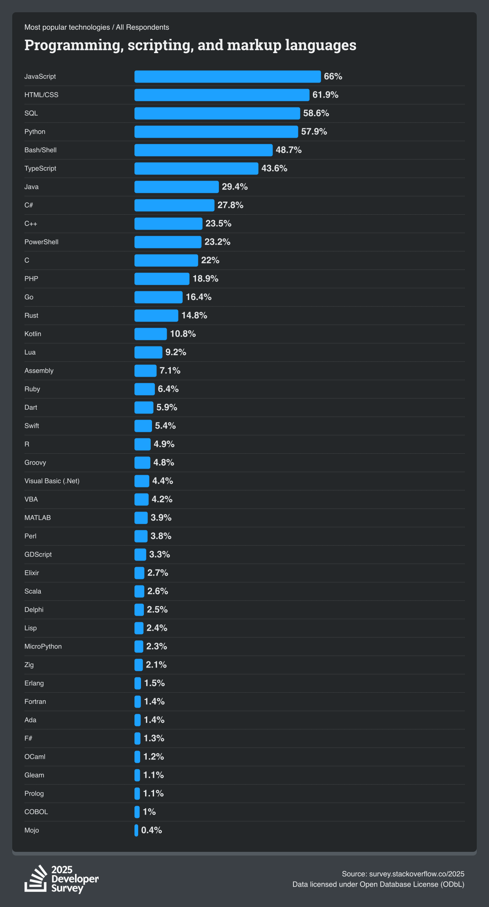
Lenguajes con los que los encuestados han trabajado en el último año. Encuesta anual a decenas de miles de desarrolladores de todo el mundo. Todos son de alto nivel; el ensamblador aparece por debajo del 10 %. Haz clic en el gráfico y baja hasta el final: COBOL y Fortran siguen ahí.
1.4.1 · Tipos de software
Tipos de software según su función
Figura 1.18. Cada capa se apoya en la de abajo. Elaboración propia.
Tabla 1.6. Tipos de software según su función. Los ejemplos son de 2026; una misma empresa puede fabricar software de los tres tipos.
1.4.2 · Licencias de software
Software propietario
Pertenece a una empresa o a un autor y se usa bajo licencia: un contrato que dice qué puedes hacer con él y qué no. Está protegido por los derechos de autor, igual que un libro, una canción o una película.
Copiarlo, distribuirlo o modificarlo sin permiso es una infracción de la Ley de Propiedad Intelectual. Al instalarlo aceptas el contrato de licencia (EULA), aunque no lo leas.
Copyright
"Derecho de copia". Todos los derechos reservados: solo el autor decide quién puede copiar, distribuir o modificar la obra. Es lo que protege al software propietario.
Copyleft
"Permiso de copia". El autor usa sus derechos para permitir usar, copiar, distribuir y modificar la obra, con una condición: las versiones derivadas mantienen las mismas condiciones.
1.4.2 · Licencias de software
Gratis no es lo mismo que libre
Tabla 1.7. Clasificación del software por licencia. Las columnas responden a la licencia de cada programa en 2026; comprueba siempre la del producto concreto antes de usarlo en una empresa.
1.4.2 · Licencias de software
Software libre: la GPL y las cuatro libertades
Un programa es libre cuando su licencia garantiza a cualquier usuario estas cuatro libertades. La GPL (GNU General Public License) es la licencia libre más conocida.
Ejecutar
El programa, con cualquier propósito.
Estudiar y modificar
Cómo funciona y adaptarlo. Exige tener el código fuente.
Distribuir copias
Para ayudar a otros, gratis o cobrando.
Mejorar y publicar las mejoras
Para que toda la comunidad se beneficie.
Copyleft. La GPL añade una condición: si distribuyes una versión modificada, tiene que llevar la misma licencia y su código fuente. Así nadie puede cerrar lo que era libre. Linux, LibreOffice, GIMP y WordPress usan la GPL.
Licencias libres sin copyleft (permisivas): MIT, BSD, Apache 2.0. Permiten reutilizar el código incluso en un programa propietario.
1.4.2 · Licencias
Creative Commons: licencias para obras creativas
Para textos, fotos, música, vídeo o apuntes, no para software. El autor elige qué condiciones pone y las combina.
Atribución
Hay que citar al autor. Está en todas.
No comercial
No se puede usar para ganar dinero.
Sin obras derivadas
Se copia tal cual, sin modificarla.
Compartir igual
Las obras derivadas llevan la misma licencia (copyleft).
Estas diapositivas se publican con CC BY-SA 4.0, y las fotos de Wikimedia Commons que llevan son CC BY-SA. Creative Commons desaconseja sus licencias para software.
Tabla 1.8. Las licencias Creative Commons, de más a menos permisiva. Fuente: creativecommons.org.
Debate en grupos
Cuatro preguntas sobre licencias
- 1¿Qué diferencia hay entre copyright y copyleft?
- 2¿Y entre software libre y software abierto?
- 3¿Qué tipo de licencia da más libertad a quien desarrolla y a quien usa?
- 4¿Qué licencia elegirías para una obra creativa: una foto, una canción, unos apuntes?
Copyright reserva todos los derechos al autor. Copyleft usa esos mismos derechos para permitir copiar y modificar, con la condición de que el resultado siga siendo libre.
Libre (Free Software Foundation, 1985) habla de ética y de las cuatro libertades del usuario. Abierto (Open Source Initiative, 1998) habla de las ventajas prácticas de desarrollar con el código a la vista. Casi todas las licencias cumplen las dos definiciones: cambia el discurso, no el papel.
Depende de a quién se proteja. Las permisivas (MIT, BSD, Apache) dan más libertad a quien desarrolla, que puede incluso cerrar el resultado. La GPL da más garantías a quien usa: el programa nunca dejará de ser libre.
Una Creative Commons: CC BY si quieres la máxima difusión, CC BY-SA si quieres que lo derivado siga abierto, CC BY-NC-ND si solo quieres que se comparta tal cual. Para software, GPL, MIT o Apache.
Pregunta a la clase · 2026
¿Es software libre un modelo de IA de "pesos abiertos"?
Y otra: ¿de quién es el código que te escribe un asistente de IA? ¿Puedes usarlo en un programa que vas a vender?
Pesos abiertos no es lo mismo que código abierto
Un modelo de "pesos abiertos" se puede descargar y ejecutar, pero su licencia suele poner condiciones de uso y no incluye ni los datos ni el código con los que se entrenó. La Open Source Initiative publicó en 2024 su definición de IA de código abierto: hacen falta el código, los pesos e información suficiente sobre los datos de entrenamiento para poder usar, estudiar, modificar y compartir el sistema. Con ese criterio, la mayoría de los modelos de pesos abiertos no lo cumplen.
El código que genera un asistente
Depende de las condiciones del servicio que uses y de lo que el asistente reproduzca: si copia fragmentos de código con licencia, esa licencia sigue mandando. La autoría de lo generado por una máquina es una cuestión abierta: la Ley de Propiedad Intelectual solo considera autor a la persona natural que crea la obra. Quien entrega el programa responde de lo que contiene.
Fuente: Open Source Initiative, Open Source AI Definition 1.0 (octubre de 2024); Real Decreto Legislativo 1/1996, artículo 5.
1.4.3 · Normativa legal
“Se entenderá por programa de ordenador toda secuencia de instrucciones o indicaciones destinadas a utilizarse, directa o indirectamente, en un sistema informático para realizar una función o una tarea o para obtener un resultado determinado, cualquiera que fuere su forma de expresión y fijación.
Ley de Propiedad Intelectual, artículo 96.1 · Real Decreto Legislativo 1/1996, de 12 de abril · Libro I, Título VII, "Programas de ordenador"
Todo lo creado tiene autor
Un programa, una foto, un texto o un vídeo están protegidos desde que se crean, sin registrarlos. Los derechos de explotación son del autor o de quien él autorice.
En España: solo excepciones concretas
La cita con fines docentes o de investigación (artículo 32), la parodia (artículo 39) y la copia privada con límites (artículo 31). Fuera de ahí, hace falta permiso o licencia.
En Estados Unidos: fair use
El "uso razonable" permite usar una parte pequeña de una obra según el propósito, la cantidad y el efecto en el mercado (sección 107 de la ley de copyright). No existe en la ley española.
1.4.3 · Normativa legal
Protección de datos personales
RGPD
Reglamento General de Protección de Datos de la Unión Europea (2016/679). Se aplica desde el 25 de mayo de 2018 en todos los países de la UE.
LOPDGDD
Ley Orgánica 3/2018, de 5 de diciembre, de Protección de Datos Personales y garantía de los derechos digitales. Adapta el RGPD a España.
- ●Dato personal: toda información sobre una persona física identificada o identificable (artículo 4 del RGPD). Nombre, DNI, correo, teléfono, dirección IP, matrícula, foto, ubicación, huella dactilar.
- ●Quien trata datos tiene que informar, pedir consentimiento cuando haga falta, guardarlos con seguridad y borrarlos cuando ya no sirvan.
- ●Cookies: las que no son necesarias exigen consentimiento, y rechazar tiene que ser tan fácil como aceptar (artículo 22.2 de la Ley 34/2002, LSSI).
- ●Fuera de la UE: los datos solo pueden salir a países con un nivel de protección equivalente, reconocido por la Comisión Europea o garantizado por contrato (capítulo V del RGPD).
- ●Autoridad: la Agencia Española de Protección de Datos (AEPD) inspecciona y sanciona: hasta 20 millones de euros o el 4 % de la facturación mundial.
Figura 1.21. Un aviso de cookies correcto: informa, permite rechazar con la misma facilidad que aceptar y enlaza a la política. Elaboración propia.
1.4.3 · Normativa legal · Caso real
Cuando la ley decide desde dónde se trabaja
El contrato. Una consultora india, Tata Consultancy Services (TCS), gana la gestión de los sistemas de información de Telefónica: redes, bases de datos, sistemas operativos y soporte de infraestructura crítica. Parte del servicio se prestaría desde India, con un coste menor.
El problema. Los sistemas de producción contienen datos de millones de clientes. Conectarse a ellos desde India es una transferencia internacional de datos, e India no ofrece un nivel de protección equivalente al de la Unión Europea.
La consecuencia. La AEPD no permitió el acceso a producción desde India sin autorización expresa. El servicio tuvo que reorganizarse: qué se hace desde dónde, y con qué garantías.
Figura 1.22. Distrito Telefónica, Madrid. Los datos de los clientes de una operadora son datos personales: el RGPD limita a quién y desde dónde se puede acceder a ellos.
Modificas un programa y lo distribuyes. ¿Qué licencia te obliga a publicar el código de tu versión?
Selecciona una opción.
Propuesta de software para un cliente
Una agencia de marketing de Valladolid con cuatro puestos de trabajo te pide una propuesta de software para el próximo año: qué programas, con qué licencia, cuánto cuestan, si sus equipos los aguantan y dónde guardar sus datos.
- ●Presupuesto: 4.000 € para el primer año, licencias y renovación de equipos incluidas.
- ●Condicionantes: dos equipos con Windows 10 sin soporte, un CRM con datos de clientes (RGPD), 40 GB de vídeo al mes que hay que conservar dos años con copia, y un plugin de WordPress que quieren vender.
- ●IA permitida en casa, con un apartado obligatorio: qué le pediste y qué comprobaste después en la web del fabricante.
Entrega
Documento de 2 a 3 páginas
Plazo
Se anuncia en clase
En clase, el día de la entrega
Giro de 30 minutos, por escrito
Cubre
Criterios c, d y e del RA1
- 1.Tabla de software por puesto: programa, tipo, licencia, precio para uso comercial, periodicidad.
- 2.Presupuesto detallado comparado con los 4.000 €.
- 3.Requisitos mínimos de cada programa frente al equipo en el que se instala.
- 4.Cálculo del almacenamiento necesario y solución propuesta con su coste.
- 5.Licencia del plugin y dónde se alojan los datos del CRM, y por qué.
- 6.Apartado "Qué le pedí a la IA y qué comprobé después".
El giro pesa más que el documento. El día de la entrega recibirás un cambio de requisitos y tendrás que adaptar tu propuesta justificando cada modificación. Enunciado completo al final de la unidad.
1.5 · Representación de la información
Por qué el ordenador solo entiende 0 y 1
Un circuito distingue con seguridad dos estados. Cada soporte físico los materializa a su manera, pero para el ordenador siempre son lo mismo: un bit, 0 o 1.
- CircuitosDos niveles de tensión: hay corriente o no la hay.
- Disco duroDos orientaciones magnéticas en cada zona del plato.
- CD y DVDHoyos y llanos que reflejan o no la luz del láser.
- SSD y flashCeldas con carga eléctrica atrapada o sin ella.
Cuando pulsas la tecla A o la tecla 9, el teclado envía una combinación de bits. Todo lo que entra, se guarda o sale del ordenador está codificado en bits.
Figura 1.23. Los hoyos (pits) de un CD al microscopio: cada cambio entre hoyo y llano es un 1; cada tramo sin cambio, ceros.
1.5.1 · Datos
Datos de entrada, internos y de salida
- ●Datos de entrada: los que llegan desde fuera, en un formato que entiende una persona o un aparato.
- ●Datos internos: la misma información codificada en bits, que es lo único que el hardware maneja.
- ●Datos de salida: el resultado, convertido otra vez a algo legible: un número, un texto, un sonido.
Para probar en clase
¿Cuánto vale cos 90°?
En una calculadora en modo grados, 0. En la consola del navegador (F12):
Math.cos(Math.PI / 2) 6.123233995736766e-17
Por dentro, 90° se convierte a radianes (π/2 = 1,5707963…), que no cabe exacto en bits. El resultado interno es 0,0000000000000000612…, que al mostrarlo se redondea a 0. Los datos internos no siempre son exactos: lo veremos en el apartado 1.6.
1.5.2 · Sistemas de numeración
Sistema de numeración
Conjunto de símbolos y de reglas para representar cantidades. El número de símbolos distintos es la base: el decimal tiene diez (0 a 9) y el binario, dos (0 y 1).
Posicional
El valor de un símbolo depende de su posición. En 222 el primer 2 vale 200, el segundo 20 y el tercero 2.
Decimal, binario, octal, hexadecimal.
No posicional
Cada símbolo vale siempre lo mismo. En XXX cada X vale 10: treinta. No tienen cero y operar con ellos es muy difícil.
Números romanos.
Figura 1.25. En la esfera, la X de las diez vale lo mismo que la X de las doce (XII): el sistema romano no es posicional.
1.5.2 · Sistemas de numeración
Teorema fundamental de la numeración
N = Σ di · bi
Cada dígito d se multiplica por la base b elevada a su posición i, y se suma todo. La posición 0 es la de las unidades; a la derecha de la coma las posiciones son negativas.
Vale para cualquier base: en binario la base es 2 y las potencias son 1, 2, 4, 8, 16… Es la herramienta para pasar de cualquier sistema a decimal.
Para la pizarra
Descompón estos números con el teorema:
Recuerda: cualquier número elevado a 0 vale 1, y 10⁻¹ = 1/10 = 0,1.
1.5.2 · Sistemas de numeración
Los cuatro sistemas de la informática
Tabla 1.9. Del 0 al 15 en los cuatro sistemas. Esta tabla hay que sabérsela.
Cómo se indica la base
El mismo número, 27, escrito en cada sistema: 27(10 11011(2 33(8 1B(16. En los lenguajes de programación se usan prefijos: 0b11011, 0o33, 0x1B.
1.5.2 · Sistemas de numeración
Contar en binario y la tabla de potencias
Como el cuentakilómetros: cuando una posición agota sus símbolos vuelve a 0 y la de su izquierda aumenta 1. En binario los símbolos se agotan enseguida.
Figura 1.26. Del 0 al 8 en decimal (arriba) y en binario (abajo). Elaboración propia.
Con n bits se pueden representar 2ⁿ valores distintos: con 8 bits, 256 (del 0 al 255); con 16 bits, 65.536; con 32 bits, 4.294.967.296.
Tabla 1.10. Potencias de 2. Cada una es el doble de la anterior.
Esta tabla te la puedes llevar escrita a mano al examen. También la tabla 1.9 del 0 al 15. Lo que no vale es la calculadora.
1.5.3 · Cambios de base
De binario a decimal: suma los pesos de los unos
Ejemplo 1 · 11011(2
16 + 8 + 2 + 1 = 27 (10
El 0 de la posición 2 no aporta nada: solo se suman los pesos de los bits a 1.
Ejemplo 2 · 11,011(2 (con parte fraccionaria)
2 + 1 + 0,25 + 0,125 = 3,375 (10
A la derecha de la coma los pesos son potencias negativas: 1/2, 1/4, 1/8… La coma no cambia de sitio.
De binario a decimal
Escribe el peso de cada posición empezando por la derecha (1, 2, 4, 8…), multiplica cada bit por su peso y suma. Las casillas avanzan solas al escribir.
Pista rellena la siguiente casilla y te explica por qué. Resolver lo completa todo. Las dos ponen a cero tu racha de aciertos: en la práctica 1 hay que llegar a diez seguidos.
1.5.3 · Cambios de base
De decimal a binario: la parte entera
Divide entre 2 y apunta el resto
El resto solo puede ser 0 (el número era par) o 1 (era impar).
Sigue con el cociente hasta que sea 0
Cada fila empieza con el cociente de la anterior. La última división es siempre 1 : 2 = 0, resto 1.
Lee los restos de abajo arriba
El primer resto es el bit de la derecha (el de menos peso); el último, el de la izquierda.
Comprueba con la tabla de pesos: 100101(2 = 32 + 4 + 1 = 37. Y las potencias de 2 no hace falta dividirlas: 32 = 2⁵ = 100000, un 1 seguido de cinco ceros.
Ejemplo · 37(10 a binario
37(10 = 100101(2 ← restos leídos de abajo arriba
De decimal a binario
Divide entre 2 y apunta cociente y resto. Cada fila empieza con el cociente que escribiste en la anterior. Al final, lee los restos de abajo arriba.
Si te equivocas en un cociente, el error se arrastra a las filas siguientes: igual que en el papel. Comprobar te dirá dónde empezó.
1.5.3 · Cambios de base
De decimal a binario: la parte fraccionaria
Multiplica por 2
La parte entera del resultado (0 o 1) es el siguiente dígito binario.
Sigue con la parte decimal
Quita el entero y vuelve a multiplicar por 2, hasta que la parte decimal sea 0.
Lee los enteros de arriba abajo
Al revés que en las divisiones: el primero va justo detrás de la coma.
Un número con las dos partes se convierte por separado y se junta: 37,375(10 = 100101,011(2.
Ejemplo · 0,375(10 a binario
0,375(10 = 0,011(2 ← la parte decimal llegó a 0: se acabó
Y si no termina nunca · 0,1(10
0,1 × 2 = 0,2 → 0 · 0,2 × 2 = 0,4 → 0 · 0,4 × 2 = 0,8 → 0
0,8 × 2 = 1,6 → 1 · 0,6 × 2 = 1,2 → 1 · 0,2 × 2 = 0,4 → 0 …
0,1(10 = 0,00011(2
Vuelve a salir 0,2 y el ciclo se repite para siempre: es periódico, como 1/3 = 0,333… en decimal. El ordenador tiene que cortarlo, y por eso guarda 0,1 con un pequeño error.
Fracciones decimales a binario
Multiplica por 2, apunta el producto y separa su parte entera. Cada fila sigue con la parte decimal de la anterior. Al final, escribe el binario leyendo los enteros de arriba abajo.
Todas las fracciones de este ejercicio terminan en cinco dígitos o menos. Puedes escribir los decimales con coma o con punto.
1.5.3 · Cambios de base
Binario y octal: grupos de 3 bits
8 = 2³, así que cada dígito octal es exactamente un grupo de tres bits. No hace falta pasar por el decimal.
Tabla 1.11. Dígitos octales y sus tres bits.
Octal → binario: cada dígito, sus tres bits
1342(8 → 001 011 100 010 → 1011100010(2
34,03(8 → 011 100 , 000 011 → 11100,000011(2
Binario → octal: grupos de tres desde la coma
11011101(2 → 011 011 101 → 335(8
10001,1001(2 → 010 001 , 100 100 → 21,44(8
En la parte entera los grupos se cuentan hacia la izquierda; en la fraccionaria, hacia la derecha. Los ceros en gris se añaden para completar el grupo: a la izquierda en la parte entera y a la derecha en la fraccionaria.
1.5.3 · Cambios de base
Binario y hexadecimal: grupos de 4 bits
16 = 2⁴: cada dígito hexadecimal es un grupo de cuatro bits. Un byte son dos dígitos hexadecimales, de 00 a FF.
Tabla 1.12. Dígitos hexadecimales y sus cuatro bits.
Hexadecimal → binario: cada dígito, sus cuatro bits
3AF(16 → 0011 1010 1111 → 1110101111(2
F0,0C(16 → 1111 0000 , 0000 1100 → 11110000,000011(2
Binario → hexadecimal: grupos de cuatro desde la coma
110110010(2 → 0001 1011 0010 → 1B2(16
101011,010001(2 → 0010 1011 , 0100 0100 → 2B,44(16
Para pasar de octal a hexadecimal (o al revés) se pasa por el binario: se deshacen los grupos de tres y se rehacen de cuatro.
Los ceros de relleno van donde no cambian el valor
Parte entera: a la izquierda
0001 1011 0010
110110010 tiene 9 bits: el grupo de la izquierda se completa por delante. 007 sigue siendo 7.
Parte fraccionaria: a la derecha
0100 0100
,010001 tiene 6 bits: el último grupo se completa por detrás. 0,50 sigue siendo 0,5.
Un cero al final de la parte entera multiplica por la base (1,1 pasaría a ser 10,1, el doble). Un cero delante de la parte fraccionaria divide. Por eso nunca se ponen ahí.
Entre binario, octal y hexadecimal
Primero agrupa (de 3 en 3 para octal, de 4 en 4 para hexadecimal) y después traduce cada grupo con la tabla. En el sentido contrario, cada dígito se convierte en su grupo de bits.
Elige un modo para practicarlo, o Al azar para que salgan mezclados, como en el examen. Hexadecimal a decimal se hace con la tabla de pesos, igual que el binario.
¿Cuál de estos sistemas de numeración NO es posicional?
Selecciona una opción.
1.5.4 · Operaciones en binario
Qué operaciones hace el ordenador
La unidad aritmético-lógica recibe uno o dos operandos en binario, la orden de qué hacer con ellos, y devuelve el resultado. Solo sabe hacer dos familias de operaciones:
Aritméticas
Suma y resta. La multiplicación y la división se hacen a base de sumas, restas y desplazamientos.
Lógicas
NOT, AND, OR, XOR… Trabajan bit a bit, sin acarreos. Sirven para comparar, enmascarar y decidir.
Figura 1.27. La UAL con los mismos operandos da un resultado distinto según la operación que le pida la unidad de control. Elaboración propia.
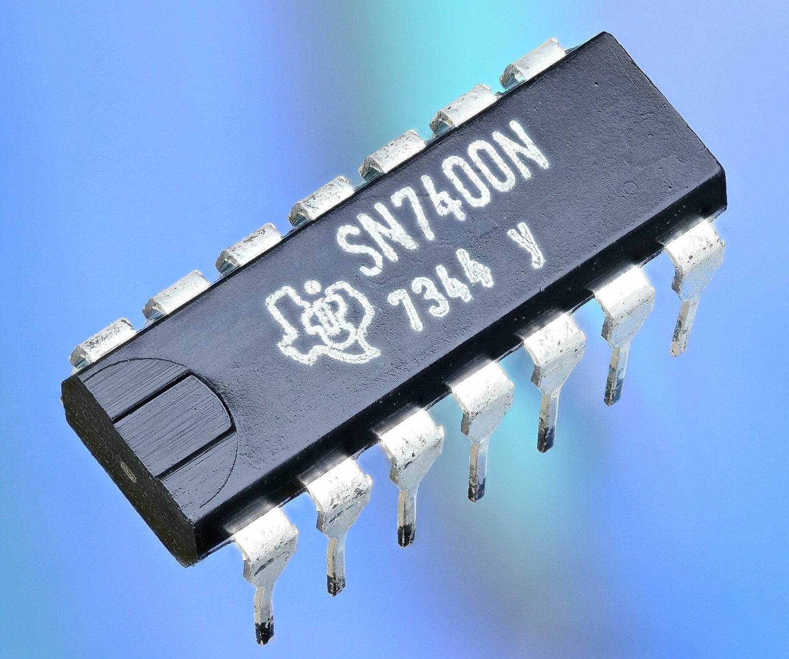
Figura 1.28. Un SN7400: cuatro puertas NAND en un chip de los años setenta. Con puertas como estas, a miles de millones, se construye la UAL de cualquier micro actual.
1.5.4 · Operaciones en binario
La suma: los casos de una columna
Se trabaja de derecha a izquierda, columna a columna, como en decimal. Solo hay que aprender qué pasa cuando salen dos o tres unos.
| Sumo | Vale | Escribo | Me llevo |
|---|---|---|---|
| 0 + 0 | 0 | 0 | 0 |
| 0 + 1 | 1 | 1 | 0 |
| 1 + 0 | 1 | 1 | 0 |
| 1 + 1 | 2 = 10 | 0 | 1 |
| 1 + 1 + 1 | 3 = 11 | 1 | 1 |
Tabla 1.13. La última fila es la de una columna que recibe un acarreo: el 1 que me llevaba se suma como un tercer sumando.
Ejemplo · 1011 + 110
- Columna 1: 1 + 0 = 1. Escribo 1.
- Columna 2: 1 + 1 = 10. Escribo 0, me llevo 1.
- Columna 3: 0 + 1 + 1 = 10. Escribo 0, me llevo 1.
- Columna 4: 1 + 0 + 1 = 10. Escribo 0, me llevo 1.
- Columna 5: solo queda el acarreo. Escribo 1.
1011 + 110 = 10001 (11 + 6 = 17)
Suma en binario
Empieza por la columna de la derecha: escribe el resultado y, encima de la columna siguiente, lo que te llevas. Las casillas van avanzando en ese orden.
| Sumo | Escribo | Me llevo |
|---|---|---|
| 0 + 0 | 0 | 0 |
| 0 + 1 · 1 + 0 | 1 | 0 |
| 1 + 1 | 0 | 1 |
| 1 + 1 + 1 | 1 | 1 |
1.5.4 · Operaciones en binario
La resta: los casos de una columna
También de derecha a izquierda. El caso difícil es 0 − 1: no se puede, así que se pide 1 a la columna de la izquierda, y ese 1 vale 2 aquí.
| Resto | Escribo | Pido a la izquierda |
|---|---|---|
| 0 − 0 | 0 | 0 |
| 1 − 0 | 1 | 0 |
| 1 − 1 | 0 | 0 |
| 0 − 1 | 1 (10 − 1) | 1 |
Tabla 1.14. La columna que prestó el 1 lo devuelve: en ella se resta 1 más. Si con eso tampoco puede, vuelve a pedir.
Ejemplo · 1101 − 0110
- Columna 1: 1 − 0 = 1.
- Columna 2: 0 − 1 no se puede. Pido 1: 10 − 1 = 1.
- Columna 3: 1 − 1 − 1 (el que me pidieron) no se puede. Pido 1: 11 − 1 − 1 = 1.
- Columna 4: 1 − 0 − 1 (el que me pidieron) = 0.
1101 − 0110 = 0111 (13 − 6 = 7)
1.5.4 · Operaciones en binario
Y si el sustraendo es mayor que el minuendo
Igual que en decimal: 5 − 9 no se hace directamente. Se calcula 9 − 5 y se pone el signo menos delante: −4.
- 1.Mira cuál de los dos es mayor: compara de izquierda a derecha el primer bit que sea distinto.
- 2.Si el de abajo es mayor, intercámbialos: el mayor arriba.
- 3.Resta normalmente y pon el signo − delante del resultado.
Esto lo hacemos las personas porque tenemos un símbolo para el signo. El ordenador no tiene ningún "−": solo tiene bits. Por eso resta de otra forma: con el complemento a 2, que veremos enseguida.
Ejemplo · 0101 − 1001
El primer bit ya es distinto: 0 arriba, 1 abajo. El de abajo es mayor.
0101 − 1001 = −0100 (5 − 9 = −4)
Resta en binario
Antes de empezar, mira cuál de los dos números es mayor. Si el de abajo es mayor, pulsa Invertir y marca el signo − en la casilla de la izquierda del resultado.
| Resto | Escribo | Pido |
|---|---|---|
| 0 − 0 · 1 − 1 | 0 | 0 |
| 1 − 0 | 1 | 0 |
| 0 − 1 | 1 | 1 |
En la fila de arriba se escribe lo que cada columna pide a la de su izquierda; esa columna lo devuelve restando 1 más.
1.5.4 · Operaciones lógicas
Operaciones lógicas básicas: NOT, AND y OR
Cada operación se define por su tabla de verdad (la salida para cada combinación de entradas) y se dibuja con el símbolo de su puerta lógica, el circuito que la hace.
NOT
Negación: invierte el bit
| A | NOT A |
|---|---|
| 0 | 1 |
| 1 | 0 |
Solo tiene un operando. Se escribe también Ā o ¬A.
AND
Producto lógico: 1 solo si los dos son 1
| A | B | A AND B |
|---|---|---|
| 0 | 0 | 0 |
| 0 | 1 | 0 |
| 1 | 0 | 0 |
| 1 | 1 | 1 |
Como dos interruptores en serie. Se escribe también A · B.
OR
Suma lógica: 1 si alguno es 1
| A | B | A OR B |
|---|---|---|
| 0 | 0 | 0 |
| 0 | 1 | 1 |
| 1 | 0 | 1 |
| 1 | 1 | 1 |
Como dos interruptores en paralelo. Se escribe también A + B.
Tabla 1.15. Tablas de verdad y símbolos de las puertas NOT, AND y OR.
1.5.4 · Operaciones lógicas
Derivadas de las básicas: XOR, NAND y NOR
Se obtienen combinando NOT, AND y OR. La bolita en la salida del símbolo significa "negado".
XOR
O exclusivo: 1 solo si son distintos
| A | B | A XOR B |
|---|---|---|
| 0 | 0 | 0 |
| 0 | 1 | 1 |
| 1 | 0 | 1 |
| 1 | 1 | 0 |
(A OR B) AND NOT (A AND B)
NAND
AND negado: 0 solo si los dos son 1
| A | B | A NAND B |
|---|---|---|
| 0 | 0 | 1 |
| 0 | 1 | 1 |
| 1 | 0 | 1 |
| 1 | 1 | 0 |
NOT (A AND B)
NOR
OR negado: 1 solo si los dos son 0
| A | B | A NOR B |
|---|---|---|
| 0 | 0 | 1 |
| 0 | 1 | 0 |
| 1 | 0 | 0 |
| 1 | 1 | 0 |
NOT (A OR B)
Tabla 1.16. Tablas de verdad y símbolos de XOR, NAND y NOR. Con solo puertas NAND se puede construir cualquier circuito digital.
1.5.4 · Operaciones lógicas
Curiosidad: el sumador está hecho de puertas
Compara la tabla de la suma de una columna con las de XOR y AND: coinciden. Con dos puertas ya se suman dos bits.
Para la resta pasa lo mismo: la diferencia es A XOR B y se pide 1 cuando NOT A AND B (A es 0 y B es 1). Dentro del ordenador no hay nadie que sepa sumar: hay circuitos que cumplen una tabla de verdad.
Para una columna que además recibe acarreo se encadenan dos de estos (sumador completo), y con ocho en fila se suman dos bytes.
Operaciones lógicas bit a bit
Aplica la operación a cada columna por separado: en las operaciones lógicas no hay acarreos ni préstamos. Elige una operación o deja que salga al azar.
| A B | AND | OR | XOR | NAND | NOR |
|---|---|---|---|---|---|
| 0 0 | 0 | 0 | 0 | 1 | 1 |
| 0 1 | 0 | 1 | 1 | 1 | 0 |
| 1 0 | 0 | 1 | 1 | 1 | 0 |
| 1 1 | 1 | 1 | 0 | 0 | 0 |
1.5.4 · Complementos
Complementos: así resta un circuito que solo sabe sumar
El ordenador no tiene un circuito para restar: tiene un sumador. Para calcular A − B suma A más el complemento de B. Un solo circuito sirve para las dos operaciones.
Complemento a 1 (C1)
Invertir todos los bits: los 0 pasan a 1 y los 1 a 0. Es un NOT bit a bit.
Complemento a 2 (C2)
El complemento a 1 más 1. Es lo que le falta al número para llegar a 2ⁿ: por eso sumarlo equivale a restar.
Truco para el C2 de un vistazo: de derecha a izquierda, copia los bits hasta el primer 1 incluido; a partir de ahí invierte todos los demás. Y di siempre con cuántos bits trabajas: el complemento depende del tamaño.
Ejemplo · 9 en 8 bits
- C1: 11110110 = 246. Fíjate: 9 + 246 = 255, todo unos.
- C2: 11110110 + 1 = 11110111 = 247. Y 9 + 247 = 256 = 2⁸: en 8 bits queda 00000000 con un 1 que sobra.
- Con el truco: desde la derecha, el primer 1 ya es el primer bit (se copia); el resto se invierte.
Complemento a 1 y a 2
Primero el complemento a 1: invierte cada bit. Después el complemento a 2: súmale 1 al C1 empezando por la derecha, llevando el acarreo mientras haya unos.
Comprueba con el truco: el C2 copia los bits del número original desde la derecha hasta el primer 1, y a partir de ahí los invierte.
1.5.4 · Complementos
Resta en complemento a 1
Complemento a 1 del sustraendo
Con el mismo número de bits que el minuendo.
Súmalo al minuendo
Una suma normal, columna a columna.
Si sobra un 1, súmaselo al resultado
El bit que no cabe se quita de la izquierda y se suma por la derecha (acarreo circular).
Funciona, pero tiene un paso de más y el cero queda con dos representaciones (00000000 y 11111111). Por eso los ordenadores usan el complemento a 2.
Ejemplo · 8 − 3 en 8 bits
00000101 = 5 (8 − 3 = 5)
1.5.4 · Complementos
Resta en complemento a 2: así resta el ordenador
Complemento a 2 del sustraendo
Invierte los bits y suma 1, con el mismo número de bits que el minuendo.
Súmalo al minuendo
Una suma normal.
El 1 que sobra se descarta
No cabe en los bits del resultado y se tira. No hay nada más que hacer.
Un solo circuito para sumar y restar: delante del sumador, un NOT por cada bit del sustraendo y un 1 de acarreo inicial. Eso es el complemento a 2 en hardware. Y el cero solo tiene una representación.
Ejemplo · 8 − 3 en 8 bits
00000101 = 5 (8 − 3 = 5; el 1 tachado se descarta)
Resta en complemento a 2
Calcula el C1 y el C2 del sustraendo, súmalo al minuendo con sus acarreos y decide qué pasa con el bit de la izquierda. Al final, escribe el resultado en decimal.
Ojo: a veces el sustraendo es mayor. Entonces no sobra ningún 1, el resultado es negativo y lo que tienes ya está en complemento a 2. Para saber cuánto vale, hazle el C2.
1.5.4 · Complementos
El signo no existe: es una interpretación
En la memoria solo hay bits. El mismo byte vale una cosa u otra según cómo decida leerlo el programa:
11111011
leído sin signo
251
128 + 64 + 32 + 16 + 8 + 2 + 1
leído en C2 de 8 bits
−5
su C2 es 00000101 = 5, con signo −
- ●En C2 el bit de la izquierda parece el signo: 1 es negativo. Pero no es un símbolo aparte, forma parte del número.
- ●Cuando una resta en C2 sale negativa no sobra ningún 1: el resultado ya está en C2. Para leerlo, hazle el C2 y ponle el signo.
Tabla 1.17. El mismo byte leído de dos maneras. Sin signo: de 0 a 255. En complemento a 2: de −128 a 127. Al pasar de 01111111 a 10000000 el valor con signo salta de 127 a −128.
1.5.4 · Cuando se acaban los bits
2.147.483.647
El mayor entero de 32 bits con signo: 2³¹ − 1
Gangnam Style, diciembre de 2014
El contador de visualizaciones de YouTube era un entero de 32 bits con signo. El vídeo de PSY lo superó y YouTube tuvo que pasar el contador a 64 bits (máximo 9.223.372.036.854.775.807).
19 de enero de 2038, 03:14:07 UTC
Muchos sistemas cuentan el tiempo en segundos desde el 1 de enero de 1970 en 32 bits con signo. Ese día el contador pasa de 01111111… a 10000000…: leído en C2, −2.147.483.648, es decir, el 13 de diciembre de 1901.
Es el desbordamiento: el bit O del registro de estado de la UCP se activa cuando una suma se sale del tamaño. Elegir cuántos bits tiene un dato tiene consecuencias.
{kind=link}
Figura 1.30. Fotograma de Gangnam Style, el primer vídeo que desbordó el contador de visualizaciones de YouTube.
¿Qué operación lógica NO necesita dos operandos?
Selecciona una opción.
1.5.5 · Detección de errores
El bit de paridad: par e impar
Los bits se estropean por el camino: ruido en un cable, una celda de memoria defectuosa, un disco rayado. Para detectarlo se añade un bit de más, redundante, calculado a partir de los datos.
Paridad par
El bit se elige para que el total de unos, contándolo a él, sea par.
0 1011010
Paridad impar
El bit se elige para que el total de unos sea impar.
1 1011010
El dato 1011010 tiene cuatro unos (par). Con paridad par se añade un 0; con impar, un 1. El bit se calcula con un XOR de todos los bits, que da 1 si el número de unos es impar.
- ✓Detecta que un bit ha cambiado. Es muy barato: una puerta por bit.
- ✗No dice cuál es el bit erróneo, así que no puede corregirlo.
- ✗Si cambian dos bits, la cuenta vuelve a cuadrar y el error pasa desapercibido.
Figura 1.31. Un error de un bit se detecta y el receptor pide que se lo reenvíen. Elaboración propia.
Bit de paridad
Calcular el bit: cuenta los unos del dato y escribe el bit que haga que el total sea par o impar, según se pida. Se añade a la izquierda.
Detectar un error: te llega una palabra de 8 bits con su paridad. Cuenta los unos y decide si ha llegado bien. Pulsa el veredicto para cambiarlo.
1.5.5 · Detección de errores
Paridad bidimensional: localizar el error
Los datos se colocan en filas y se calcula un bit de paridad por fila y otro por columna. Si un bit cambia, fallan a la vez la paridad de su fila y la de su columna: el cruce señala el bit.
- ✓Localiza un error de un bit y, como solo puede valer 0 o 1, lo corrige invirtiéndolo.
- ✓Detecta la mayoría de los errores de dos bits.
- ✗Cuesta más redundancia: aquí, 11 bits de control para 21 de datos.
En el ejemplo, el bit de la fila 2, columna 4 llegó cambiado. La fila 2 tiene ahora cinco unos (no cuadra con paridad par) y la columna 4 tiene dos unos con paridad 1 (tampoco cuadra). Se invierte ese bit y el bloque queda corregido.
Bloque recibido, paridad par por filas y columnas
| fila 1 | 1 | 0 | 1 | 1 | 0 | 1 | 0 | 0 | 4 unos ✓ | |
| fila 2 | 0 | 1 | 1 | 1 | 0 | 1 | 1 | 0 | 5 unos ✗ | |
| fila 3 | 1 | 1 | 1 | 0 | 0 | 1 | 1 | 1 | 5 unos ✓ | |
| paridad | 0 | 0 | 1 | 1 | 0 | 1 | 0 | 1 | ||
| columna 4: 2 unos con paridad 1 ✗ | ||||||||||
Figura 1.32. La fila y la columna que no cuadran se cruzan en el bit erróneo (recuadro amarillo). Elaboración propia.
1.5.5 · Detección de errores
Códigos cíclicos: el CRC
El emisor trata el bloque de datos como un número binario enorme, lo divide por un número fijo (el polinomio generador, que marca el estándar) y envía el resto detrás de los datos. El receptor repite la división: si su resto no coincide, el bloque llegó mal.
Tabla 1.18. Familias de CRC más habituales.
Regla general: cuantos más bits de control, más errores se detectan y menos eficiencia, porque se transmiten bits que no son datos. Cada sistema elige su equilibrio.
Figura 1.33. Funcionamiento de un CRC. La división se hace con un circuito de desplazamiento muy sencillo, bit a bit, a la velocidad de la red. Elaboración propia.